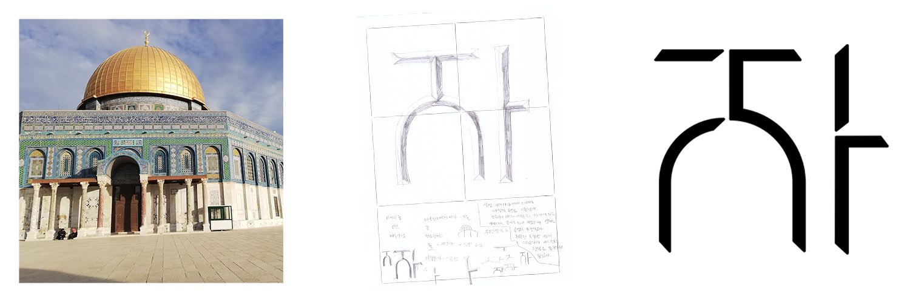
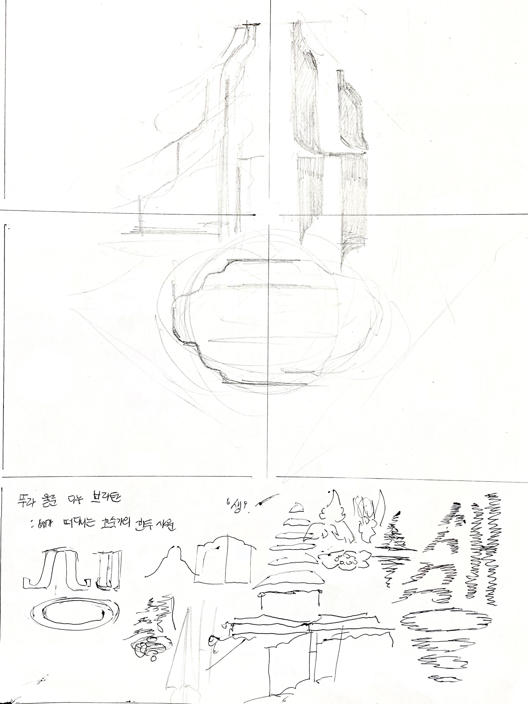
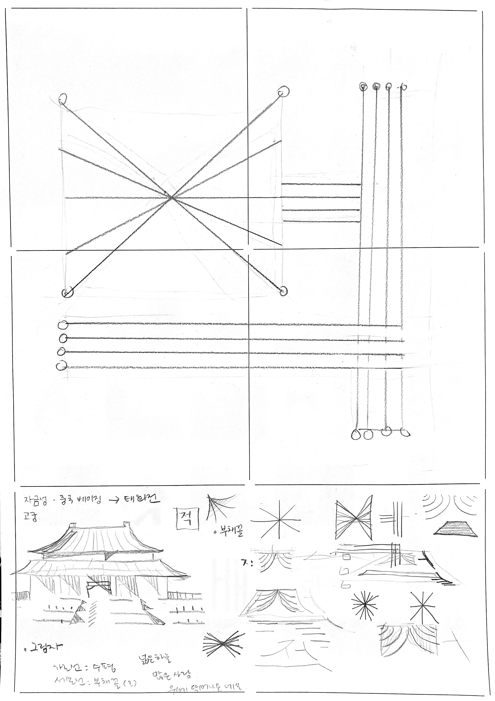
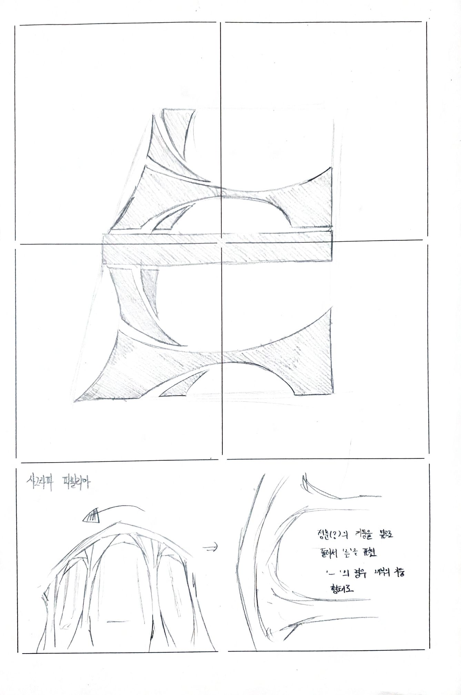
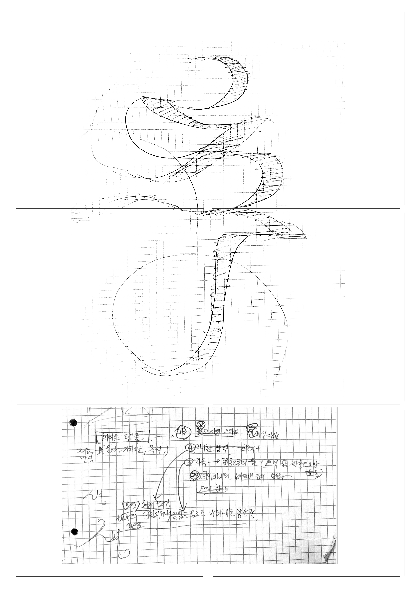

Dabin Kim 多彬 - Typography ↔ Print + Digital --- Dabin Kim 多彬 - Typography ↔ Print + Digital --- Dabin Kim 多彬 - Typography ↔ Print + Digital --- Dabin Kim 多彬 - Typography ↔ Print + Digital ---
Dabin Kim Print Web Info
•••••••••••••••••••••••••••••••••••••••••••••••••••••••••••••••••••••••
Dabin Kim is Typography Apprentice. Tries to explore the boundary of visual language, work in and out between digital and tangible surface. Studying Visual Communication Design at Hongik University, Korea.
Email → dabinkiim@gmail.com Visit → Instagram • Tumblr • Github
Small Practices → Typography _ , Coding _
‘Window’ Workshop, poster and website, 2020.
October 9, 2020. Hangeul Day.
43 Participants.
6PM - 8PM, Online Workshop with Zoom.

타이포그라피 소모임 ‘한글꼴연구회’에서 지난 한글날 글자를 지어보는 워크숍 프로그램 '창문'을 진행했다. 본 워크숍에서 공간은 글자를 그리기 위한 대지가, 글자는 지역과 공간을 투영하는 창문으로 은유되었다. 참가자는 GPS 좌표를 지급받아 그 공간을 살펴보고, 공간을 투영하는 글자를 각각 그려 하나의 문장을 완성했다.
Hosted a workshop program called ‘Window’ at Typography Group ‘Hangulggol’ to make up letters on Hangeul Day. Participants were given GPS coordinates to visit the space through googlemap and completed one sentence by drawing each letter projecting the space.
How it went.


Space → Sketch → Letter.

How it looks.